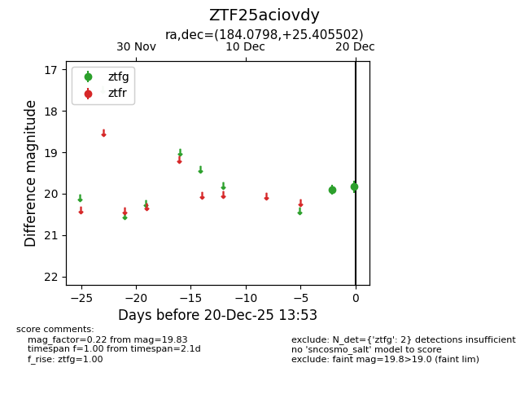
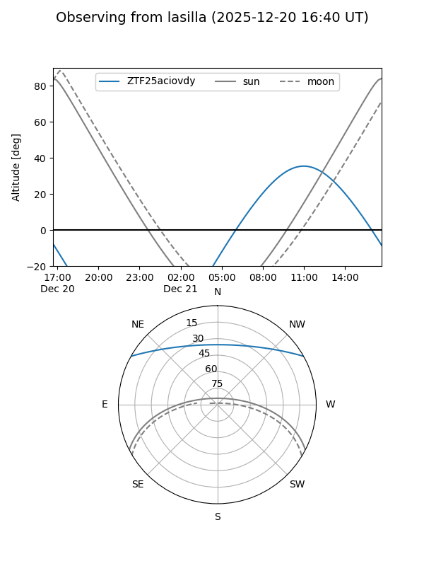
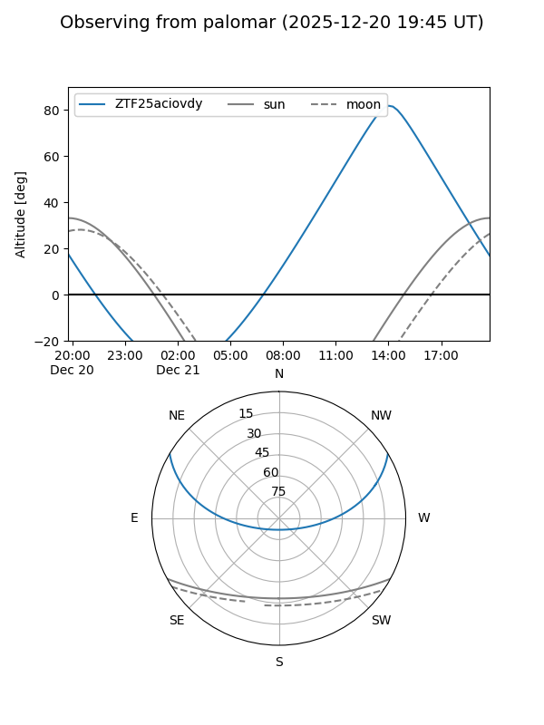

ZTF25aciovdy
Target ZTF25aciovdy at 2025-12-20 14:44
Aliases and brokers:
FINK: fink-portal.org/ZTF25aciovdy
Lasair: lasair-ztf.lsst.ac.uk/objects/ZTF25aciovdy
ALeRCE: alerce.online/object/ZTF25aciovdy
alt names
ZTF25aciovdy (ztf,fink_ztf)
Coordinates:
equatorial (ra, dec) = 184.0798,+25.40550
equatorial (HMS+DMS) = 12:16:19.16,+25:24:19.81
galactic (l, b) = (223.3047,+81.94262)
Flags:
Photometry:
last ztfg=19.83, ztfr=20.26
2 ztfg, 1 ztfr detections
Lightcurve

Visibility


Additional plots